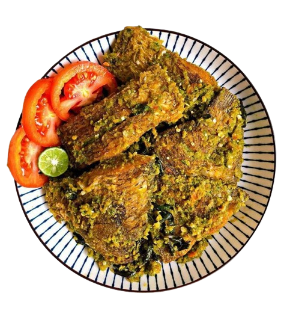

Gurame Cabe Ijo
Bahan bahan
- 1 ekor ikan gurame (sekitar 500 gram), bersihkan dan fillet
- 1 buah jeruk nipis
- 15 buah cabai hijau besar, buang bijinya
- 10 buah cabai rawit hijau / sesuai selera
- 6 siung bawang merah
- 4 siung bawang putih
- 2 tomat hijau
- 1 sdt terasi bakar
- 1 sdt gula pasir
- Garam secukupnya
- Minyak secukupnya
Cara Memasak
- Lumuri fillet gurame dengan air jeruk nipis dan garam. Diamkan selama 15 menit.
- Panaskan minyak dalam wajan, goreng fillet gurame hingga matang dan berwarna keemasan. Angkat dan tiriskan.
- Haluskan cabai hijau besar, cabai rawit hijau, bawang merah, bawang putih, dan tomat hijau.
- Tumis bumbu halus hingga harum dan matang.
- Tambahkan terasi bakar, gula pasir, dan garam. Aduk rata dan masak hingga bumbu benar-benar matang.
- Masukkan fillet gurame yang sudah digoreng ke dalam tumisan bumbu.Masak sebentar hingga bumbu meresap.
- Angkat dan sajikan.